Getting started
Writing
6. HomeStreak, daily challenge and recent projects.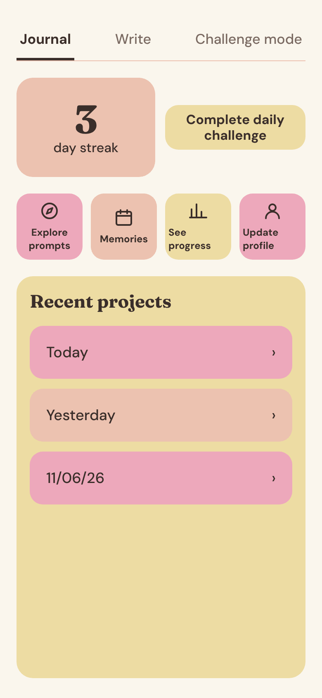
7. Make a ChoiceDifficulty, prompt type and word bank.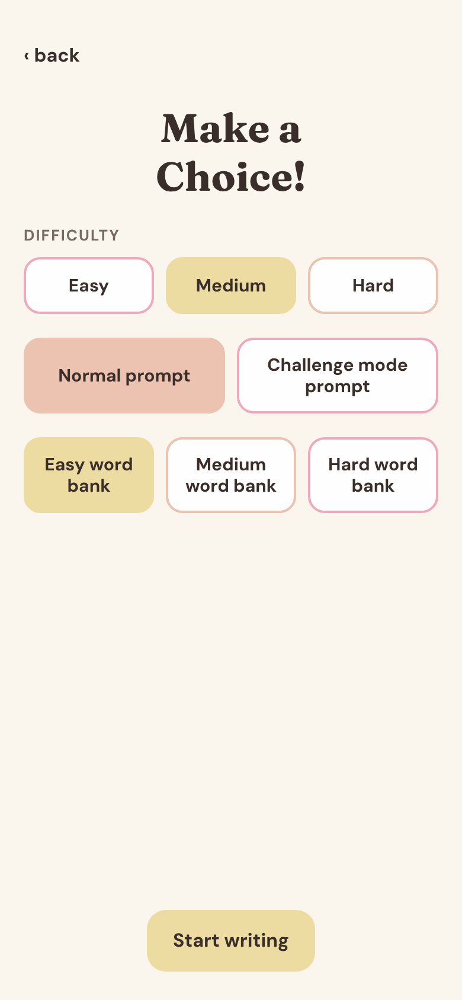
8. PromptAI prompt from your onboarding answers. 3 re-spins a day.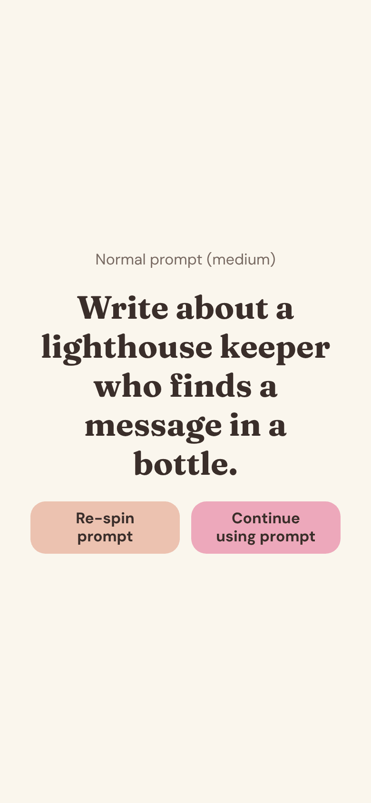
9. WriteWord count, timer, and used words underlined.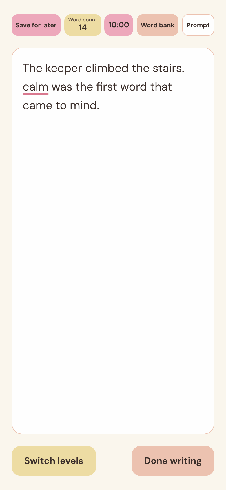
10. Write, Prompt openTap Prompt to see it again.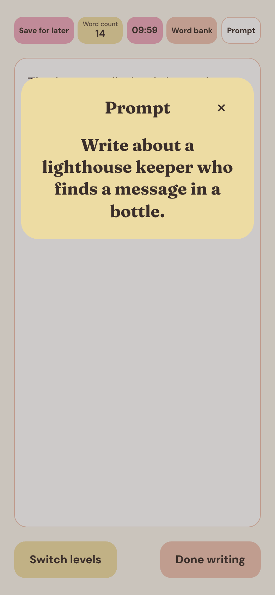
11. Write, word bank openUsed words are crossed out.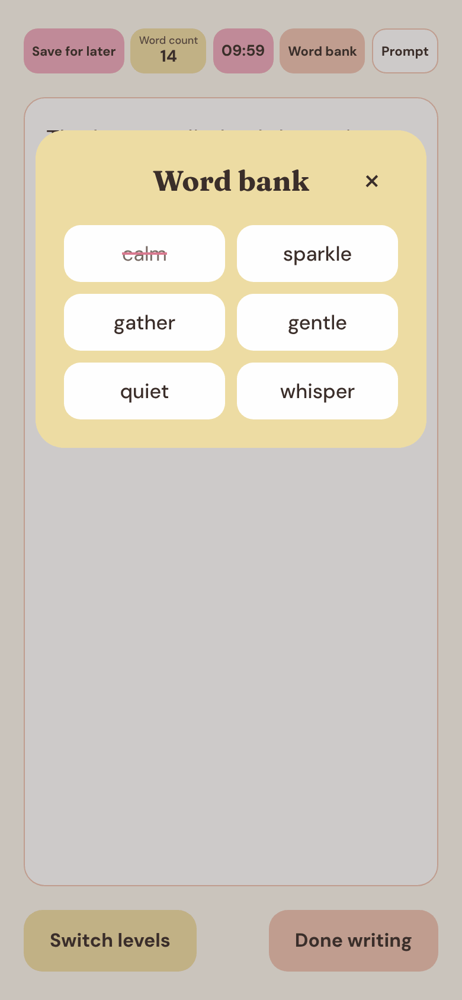
12. CongratsAfter Done writing.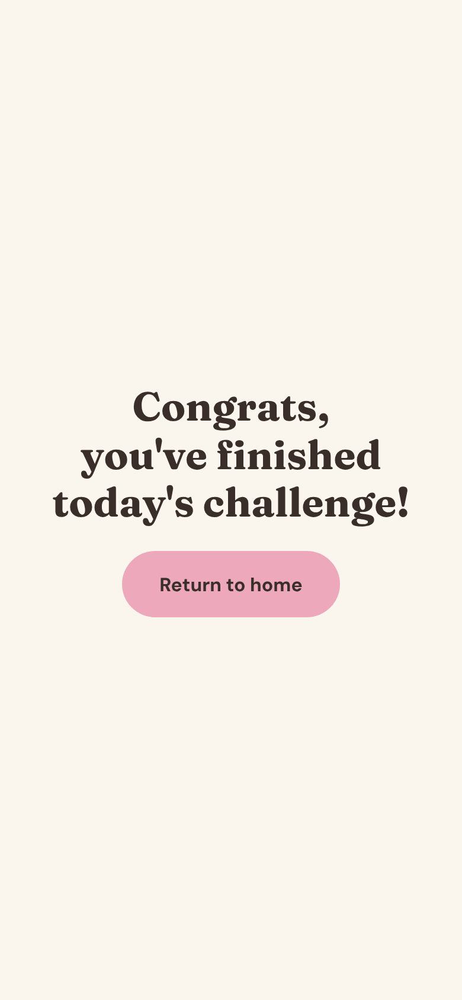
13. Daily challengeSame prompt for everyone today. 300 words.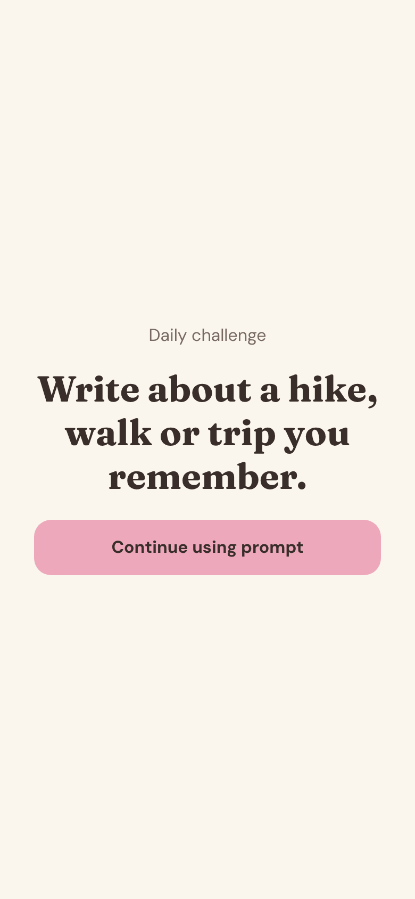
Profile
14. ProfilePicture, streaks, entries, status, levels and words.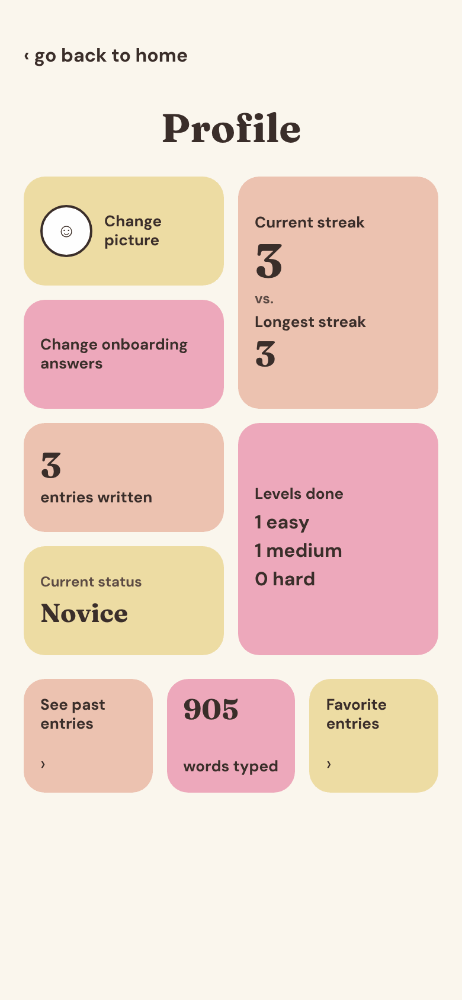
15. See past entriesYour entries with their dates.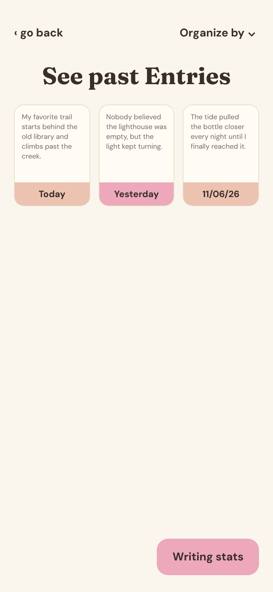
16. Organize byDate, mode or word count.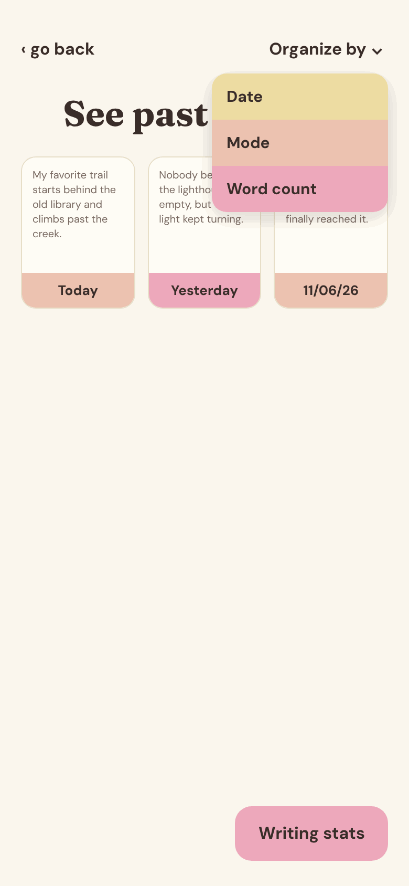
17. Writing statsMost used mode, minutes and longest streak.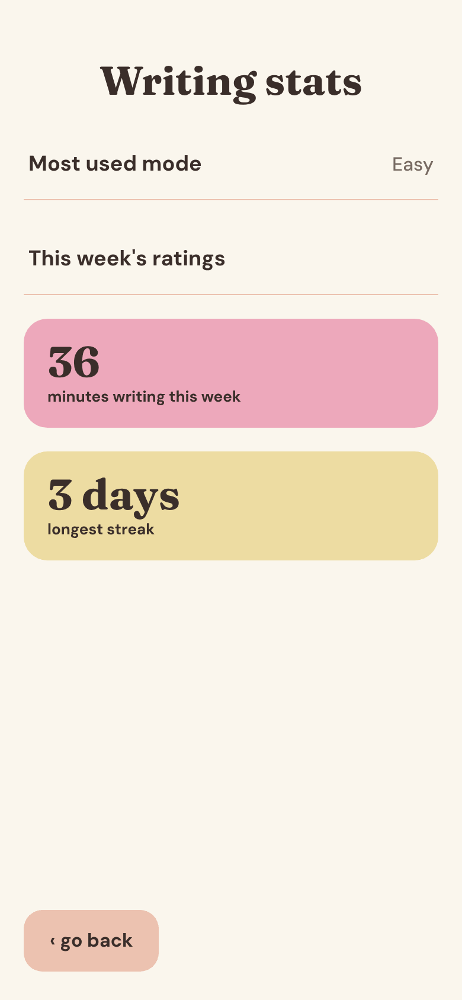